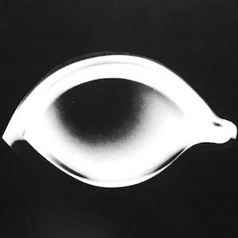

первая редакция
- 🇩🇪 Das Schwarze Auge: Abenteuer Basis-Spiel (1984)
- 🇩🇪 Das Schwarze Auge: Zusatzausrüstung für alle Abenteuer (1985)
- 🇳🇱
9601Het Oog des Meesters: Basisspel (1985) - 🇳🇱
9602Het Oog des Meesters: De instrumenten van de Meester (1985) - 🇳🇱
9605Avontuur 1: Herberg ‘Het zwarte everzwijn’ (1985) - 🇳🇱
9606Avontuur 2: Het woud, waaruit geen terugkeer mogelijk is (1985) - 🇳🇱
9607Avontuur 3: Het schip van de verloren zielen (1985) - 🇳🇱
9608Avontuur 4: De zeven magische kelken (1985) - 🇳🇱
9609Avontuur 5: Nedime, de dochter van de kalief (1985?) - 🇳🇱
9610Avontuur 6: Onder het noorderlicht (1985?) - 🇳🇱
9611Avontuur 7: De vloek van Borbarad (1985) - 🇳🇱
9612Avontuur 8: Door de toegangspoort der wereld (1985?) - 🇫🇷 L'Œil noir (1985)
- 🇮🇹 Uno sguardo nel buio (1986)
полуторная редакция
эти два дополнения были выпущены как расширение правил первой редакции, но сильно расширяют систему, и на практике использовались чаще со второй редакцией, в которую их некоторые источники и относят; эта (под)редакция была рассчитана на «профессионалов», для игры по ней нужны были персонажи 15 уровня; Тарун, сеттинг этих двух книг, был забыт до 2013 года
- 🇩🇪 DSA-Professional: Schwertmeister Set I (1988)
- 🇩🇪 DSA-Professional II: das Fest der Schwertmeister (1989)
- 🇩🇪 Tharun: Die Welt der Schwertmeister (2013)
вторая редакция
- 🇩🇪 Das Schwarze Auge (1988)
- 🇳🇱
19310Inleiding op het Avontuur (апрель 1996) - 🇳🇱
19329Avontuur 9: De vloek van de Mantikor (апрель 1996) - 🇳🇱
19330Avontuur 10: Heksennacht (апрель 1996) - 🇳🇱
19331Avontuur 11: In de Klauwen van de Demon (май 1996) - 🇳🇱
19332Avontuur 12: Het Bloedrecht van Thalusa (май 1996) - 🇳🇱
19334Avontuur 13: In het Hol van de Zeeoger (май 1996) - 🇳🇱
19333Avontuur 14: De Tocht door het Nevelmoeras (май 1996) - 🇳🇱
19335Avontuur 15: De Stroom van het Verderf (июнь 1996) - 🇳🇱
19336Avontuur 16: Firuns land (июнь 1996) - 🇳🇱
19337Avontuur 17: Volg de Drakenhals (август 1996) - 🇳🇱
19338Avontuur 18: Stof en sterren (август 1996) - 🇳🇱
19339Een Staf uit Olmenhout(был запланирован на октябрь 1996) - 🇳🇱
19340De Toorn van de Beer(был запланирован на октябрь 1996)
третья редакция
- 🇩🇪 Die Helden des Schwarzen Auges – Teil I (1992)
- 🇩🇪 Die Helden des Schwarzen Auges – Teil II (1992)
- 🇩🇪 Mit Mantel, Schwert und Zauberstab (1992)
- 🇳🇱
19315Met Mantel, Zwaard en Toverstaf (май 1996) — на нидерландском выходило как дополнение ко второй редакции - 🇩🇪 Götter, Magier und Geweihte (1994).
- 🇳🇱
19316Goden, Magiërs en Gewijden (сентябрь 1996) — аналогично, считалось вторым дополнением ко второй редакции
четвёртая редакция
- 🇩🇪 Das Schwarze Auge (2001)
- 🇩🇪 Schwerter und Helden (2001)
- 🇩🇪 Zauberei und Hexenwerk (2001)
- 🇩🇪 Götter und Dämonen (2001)
- 🇩🇪 Liber Cantiones Deluxe (2001)
- 🇬🇧
FPR10450The Dark Eye: Basic Rules (2003) - 🇬🇧
FPR15001The Dark Eye: Secret of the Blue Tower and Witching Hours (2004) - 🇬🇧
FPR15002The Dark Eye: World of Aventuria (2006)
редакция четыре-один
- 🇩🇪 Das Schwarze Auge: Basisregelwerk (2006)
- 🇩🇪 Myranor
- 🇩🇪 Myranische Götter
- 🇩🇪 Myranische Magie
- 🇩🇪 Liber Cantiones
- 🇩🇪 Liber Liturgium
- 🇩🇪 Ordnung ins Chaos
- 🇩🇪 Wege der Alchimie
- 🇩🇪 Wege der Götter
- 🇩🇪 Wege der Helden
- 🇩🇪 Wege der Zauberei
- 🇩🇪 Wege des Entdeckers
- 🇩🇪 Wege des Schwerts
- 🇩🇪 Wege nach Myranor
- 🇩🇪 Wege nach Tharun
пятая редакция
длинная линейка очень годных, пусть и не сильно закрученных модулей, которые вышли на немецком очень строго один за другим в одинаковом формате с одним и тем же числом страниц, а вот на другие языки переводилось далеко не всё и в крайне странной последовательности
- 🇩🇪 Das Schwarze Auge (2015)
- 🇬🇧
US25001EThe Dark Eye: Core Rules (2016) - 🇬🇧
US25201EThe Dark Eye: Aventurian Bestiary (2016) - 🇳🇱 Het Oog des Meesters (2019)
- 🇷🇺 Тёмное Око: Первое знакомство (2017)
- 🇩🇪 Silvanas Befreiung (2018)
- 🇳🇱 Silvana's bevrijding (2021)
- 🇩🇪
HW001Hexenreigen (2015) - 🇷🇺
HW001Ведьмин круг (2017) - 🇳🇱
HW001Heldenwerk 1: Heksenrei (2018) - 🇩🇪
HW002Ein Goblin mehr oder weniger (2015) - 🇬🇧
HW002A Goblin More or Less (2016) - 🇷🇺
HW002Одним гоблином больше или меньше (2017) - 🇩🇪
HW003Die gehäutete Schlange (2015) - 🇷🇺
HW003Змеиная линька (2017) - 🇩🇪
HW004Kibakadabra (2016) - 🇬🇧
HW004Kibakadabra (2016) - 🇩🇪
HW005Die Thorwalertrommel (2016) - 🇩🇪
HW006Kaiser der Diebe (2016) - 🇩🇪
HW007Deicherbe (2016) - 🇩🇪
HW008Rübenernte (2016) - 🇬🇧
HW008Turnip Harvest (2017) - 🇩🇪
HW009Sklaven für eine Nacht (2016) - 🇳🇱
HW009Heldenwerk 9: Slaven voor één Nacht (2020) - 🇩🇪
HW010Rache ist Stockfisch (2017) - 🇩🇪
KRK001Seelanders Eleven (2017) - 🇩🇪
HW011Blutiger Wein (2017) - 🇩🇪
HW012Die Paligan-Akten (2017) - 🇩🇪
HW013Des Wandelbaren Schicksal (2017) - 🇩🇪
HW014Der Dunkle Mhanadi (2017) - 🇳🇱
HW015Heldenwerk 15: Gekruiste klingen (2021) - 🇳🇱
HW020Heldenwerk 20: Een feest voor de ogen (2019) - 🇳🇱
HW021Heldenwerk 21: Nachtzwarte Zee (2020) - 🇳🇱
HW029Heldenwerk 29: Mada's Blauwe Ogen (2021)